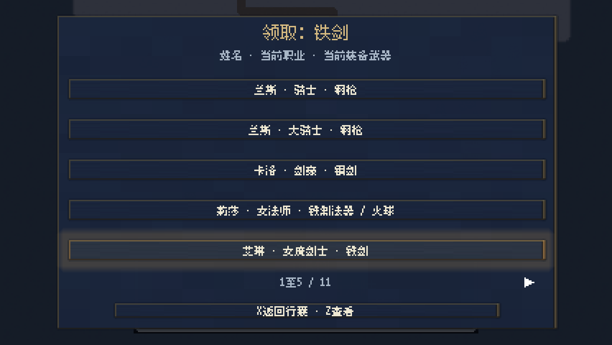
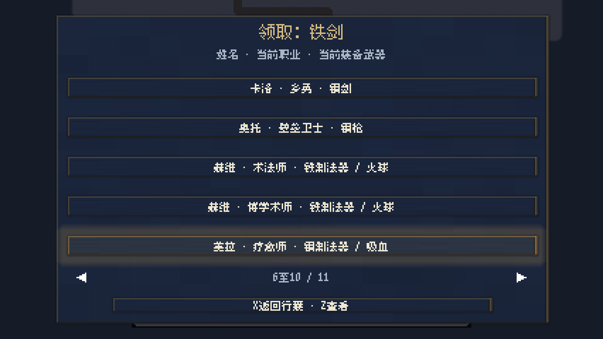
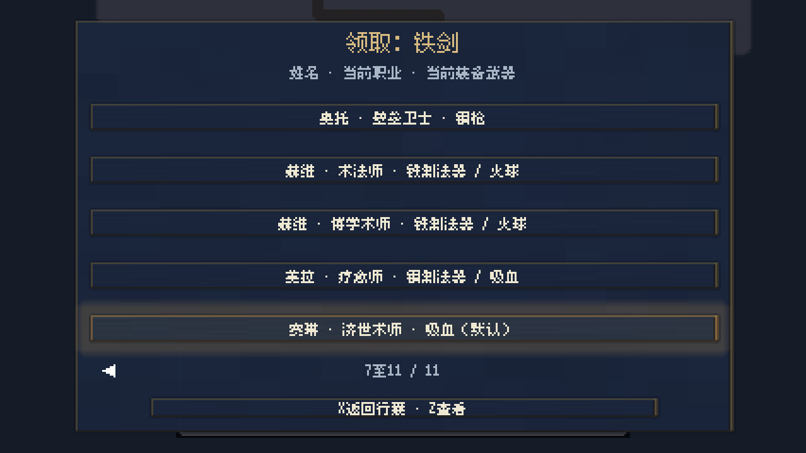
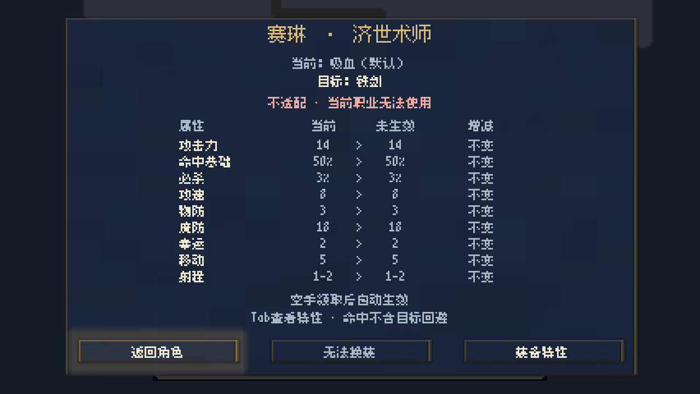
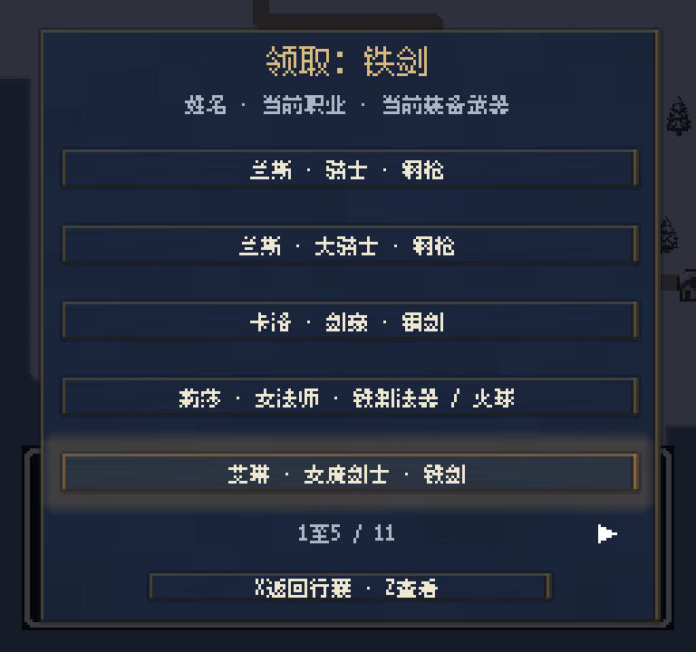
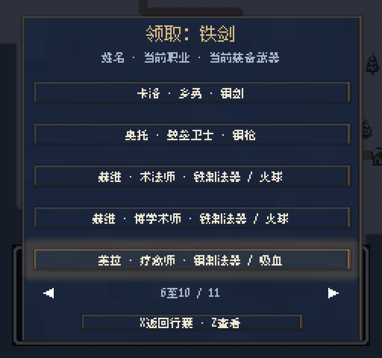
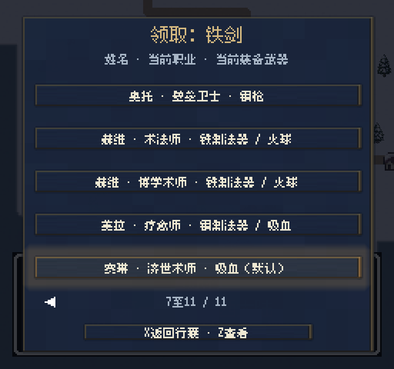
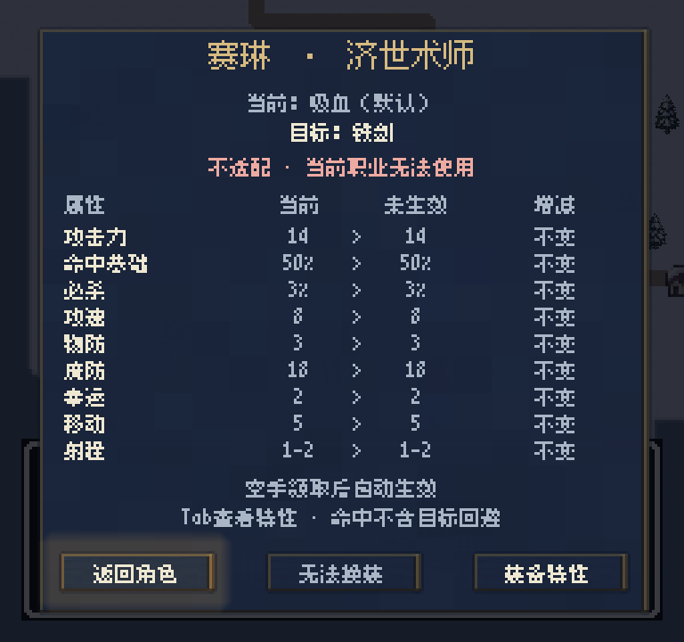

完整职业命名·界面核对
11个己方新名和3个敌方新名均已接入。已补齐最初部分确认的名称。
- 骑士
- 大骑士
- 剑豪
- 女魔剑士
- 乡勇
- 术法师
- 女法师
- 济世术师
- 疗愈师
- 博学术师
- 壁垒卫士
敌方：咒法师、移形术师、召魔师
48项装备检查通过，旧第四章存档18人数据完全保留。8张后台截图覆盖宽窄画幅下全部11个己方新名，文字安全区检查通过。
Text safety audit - Image metadata - Validation

members-426-page1.png - 1278x720 - 38595 bytes
members-426-page2.png - 1278x720 - 39312 bytes
members-426-page3.png - 1278x720 - 39510 bytes
comparison-426.png - 1278x720 - 37035 bytes
members-256-page1.png - 768x720 - 31893 bytes
members-256-page2.png - 768x720 - 32658 bytes
members-256-page3.png - 768x720 - 32841 bytes
comparison-256.png - 768x720 - 31310 bytes已有0.9.0安装包未重新导出。